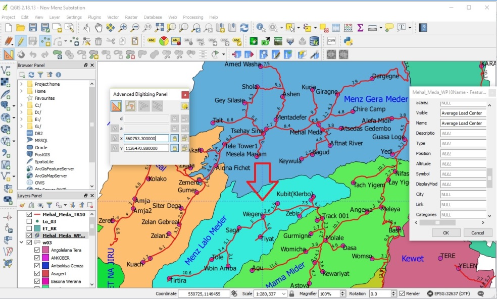

Designer:-
DANIEL ADMASSU
(Distribution Planning and Design Electrical
Engineer III,GIS Expert)
Contents:
Reference
guide the way how to collect all LV network components governed by EEU
(Ethiopian Electric Utility)
Well and managed data information about for the
whole network system under EEU has a great importance to optimize, manage
and make some analysis for different scenarios. Now a days data is a big
issue in any sector to facilitate the ongoing process work to mitigate
the final goals sited by the organization. A GIS (Geographical Information
System) is a passionate software tool that handle all the data referenced
to a particular task, specially belongs to geo-spacial referenced database
system. In EEU(Ethiopian Electric Utility), concerning to 66KV High Voltage
system, 15KV or 33KV Medium voltage system and a 220V/380V Low Voltage
system, there is a big need to manipulate, optimize, and analyze for different
assets throughout the whole system. This because EEU has a plan to mitigate
the sited goals by consecutive gross transformational plan I, II …III
by 2030 GC, to electrify rural Towns/Villages in each Woredas under different
regions and plan to reach 90% of electrification for the total population
of the country, Ethiopia. Upon this factor a GIS tool is important to
make the required analysis that the way how to plan for electrification
system either from the Grid or Off-Grid system.
The overall truth that the data for Substation, MV (15KV and 33KV) and
LV (220V/380V) in all regions of Ethiopia, which are available by EEU
are more or less insufficient for our need. In fact there is ongoing process
to collect geo-spacial MV (15KV and 33KV) network information from the
field and produce a model geo-map by NRECA International (USAID FUND)
company and a World Bank consultant. Now under this project plan and implementation,
we will go to prepare LV Network geo-data management and make it ready
for further Network Planning and Editing as well as for different network
optimization and analysis purpose. For Geo-data collection required devices
like handheld GPS (Geographical Positioning System) or Smart Mobile Phones
using ODK Software or using OSMTrucker software and satellite maps using
Google Map are very necessary for best project accomplishment.
This project should undergo through three phases.
? The first phase is building all infrastructures and system configuration
at central and region UEAP offices.
? The second phase is installation of GeoNode, pgAdmin, QGIS or ESRI GIS,
PuTTY client software, supportive system like geoserver, git etc…,
Geo-Data Collection and implementation of the above listed softwares for
geo-data management and analysis.
? The third phase is network planning and editing with best planning software
like NEPLAN or ETAB and network profile software like PLSCAD or any other.
So in order to collect and organize the LV Network geo-data by own force,
there are some requirements so as to satisfy our need. Among them the
following basic necessities are listed below:
1) A WAN QGIS system to be installed in each Central and Regions UEAP’s
(Universal Electric Access Program) offices need different devices on
the network.
? A client WAN QGIS System in each Regions UEAP’s office.
? A central main QGIS Server at Central UEAP office.
? Internet Cables, Routers, hubs, switches, Wifi apparatus, Modem apparatus,
Server (either desktop or Spacial server), Racks, DSL cables, Ethiopian
Telecommunication DSL Line or Broad band line.
2) A genuine ESRI GIS Software for all Central and Regions UEAP offices
or an open source QGIS software and PostgreSQL QGIS (postgreAdmin) software
for all. Actually it is recommended to use the open source one.
? A client-Server GeoNode system either (Linux or desktop system)
? A Client-Server pgAdmin postgreSQL system
3) A desktop computers for all Central and Regions UEAP’s offices
which have a great capacity, good speed performance and enough RAM size
specification.
4) GPS instruments.
? A handheld device GPS Instrument with latest map built in. ie. Garmin-60
GPS (recommended).
? Smart Mobile Phones using ODK Software or using OSM Trucker software
(optional).
5) Data storage devices (big memory size like 4TB is recommended).
Method
of Data Collection:
There are a lot of satellites revolving the earth 20180 km above sea level.
A GPS (Global Positioning System) device is an instrument, which works
through trilateration method, used get the geographic position of an object
by the help of those satellites revolving the earth with their own orbits
in sustainable manner. This device works based on calculating at list
three reference position of satellites with their respective distance
from the earth, the time take for the signal from those satellites to
the receiver (GPS Mobile or GPS device) and the speed of light. This process
repeats through consecutive period in each single steps of our movement
with the device.
Fig1. Different satellites around the earth with
their respective positions
An internal map installed GPS device is better than any other device without
it, which is important for the users to use it as a guide reference during
capturing network components outside the field.
Fig2. GPS devices
There is also a big receiver on the earth to receive the satellites signals
and retransmit back and forward to the satellites and horizontally for
different Mobile receivers to capture an object position accurately with
less error. But in the case of only GPS device and satellites communication
no need to communicate the earth satellite receiver.
Fig3. Earth-satellites’ Receiver.
Fig4. Functioning of Satellites, Earth Receivers
and GPS instrument
The nature of LV network asset of EEU is sophisticated and more complex
as compared to HV and MV network. A little quit to be focus during data
collection is important in order to minimize different types of errors.
Whatever types of GPS instruments (either Garmin-60 handheld GPS instruments
or Smart Mobile Phones or Total Station) that we use, there is a need
to wait until the device to communicate with three or more satellites
so as to get best strong signals to decrease the error deviation. The
setting for the GPS devices or smart Phones should be set in standard
mode which is mostly data in WGS 1984, in degree-minute- second in geographic
and with datum WGS 1984 Addendum Zone 36N,37N,38N UTM in meter positioning
format.
Among these LV network components Dead End point, T-off, 2T-off, Section
Switch, Gantry, Pole supporting type, Distribution Transformers (25 KVA,
50 KVA, 100KVA, 200KVA, 250KVA, 300KVA, 315KVA, 400KVA, 500KVA, 630KVA,
750KVA, 800KVA, 1250KVA), Power Transformers (1MVA, 1.25MVA, 1.5MVA, 2MVA,
3MVA, 3.5MVA, 4MVA, 5MVA, 6MVA, 7.5MVA, 8MVA 10MVA, 12MVA, 15MVA, 20MVA
etc..), Pole assembly type (Suspension, Light Angle, Heavy Angle, Tension
Tower, Chain, T-off, 2T-off, Dead End), Pole Type (Concrete, Wooden, Steel),
Circuit Breaker (SF6 Gas, Oil, Vacuum), Customer Meter Automatic Type
(5/15 10A, 10/20 25A, 20/60 32A), Substation Type(1MVA, 1.25MVA, 1.5MVA,
2MVA, 3MVA, 3.5MVA, 4MVA, 5MVA, 6MVA, 7.5MVA, 8MVA 10MVA, 12MVA, 15MVA,
20MVA etc..), Autoreclosure and Load Break Switch are common and we should
have to take care to have all this data during survey outside the field.
We can collect additional notes and photos for better data analysis.
The possible situations that encountered during
site survey:
During LV network survey, we will collect the route line along the road
or rail ways which has a small deviation from the original construction
location. If there a need to have detail LV network information in Towns/Villages
Roads, LV existing lines, houses, Other basic Load points etc., can be
captured on site, and also put on the detail profile drawings. If there
are side slopes affecting the dimensioning of the poles, this shall be
clearly marked by measuring the ground profile also max. 2 meters aside
of the line route.
There is a possibility for the LV line passes through mountainous and
hilly areas. In such situations we can stop trucking at foot point and
continuing trucking at top when it becomes closest to the road.
Pole Spoting: The pole spotting can be made on the profile drawings for
the specific Towns/Villages if necessary by using suitable templates.
Stacking charts must also be prepared. For the LV network survey, suitable
town maps, existing drawings and the site handover report can be used
as a guid to make the survey more easy.
Reconnaissance Survey:
It is a rapid, thorough and exhaustive survey conducted to examine the
entire area through which the existing line may pass. It is the key step
to the project and a series of walk-over surveys are conducted carefully
to determine the best way in order capture the truck closest to the existing
network by observing and evaluating all possible mechanisms. The observation
includes topography, geological nature, drainage characteristics (swampyness),
forest, towns, other existing situation of the area and any obstacle that
restricting us no to follow the line route.
Specific detail LV survey for Towns/Villages:
Sometimes it may necessary to have detail LV network survey. From the
reconnaissance survey along the most suitable route, detail instrumental
survey is conducted to prepare accurate topographic map (plan and profile)
of the selected route by measuring distance, height, horizontal angles
and GPS data. In this stage profile and plan of the route are plotted
on paper to a suitable scale. Then by study the terrain conditions, pole
spotting shall be made on plan profile drawings. The following should
be taken into account during pole spotting. We should have to keep ground
clearance. Here are some examples.
? Hilly area: pole should be spotted on the peak of hill / mountain irrespective
of the span.
? Valley area: Poles should not spotted at depression area and such location
shall be crossed by bridging a single span.
For all cases show in below map, the straight line trucking has no matter
in order to capture the existing network line, which has less error as
compared to the original one. The following pictures shows us possible
condition likely to happen on the field.

Fig5.Possible Situation of LV Line on the field.
Infrastructures:
A WAN QGIS system to be installed in each UEAP’s
(Universal Electric Access Program) Central and Region offices are need
different devices on the network.
? Internet Cables, Routers, hubs, switches, Wifi apparatus, Modem apparatus,
Server (either desktop or Spacial server), Racks, DSL cables, Ethiopian
Telecommunication DSL Line or Broad band line.
For the WAN system to be installed at Central and Regions’ offices,
the above components are necessary to make it alive.
HUB:
It is a device used to connect all central and regions UEAP’s offices’
network devices together on internal network. It has multiple ports that
accept internet connection from network devices. But it doesn’t
filter the data from the sender to a specific networked computer. So that
every data pocket reaches to one port can be seen to other networked computers
within same LAN.
SWITCH:
It is a device similar to HUB,
which has multiple ports to accept internet connection from network devices.
It has an ability to learn the physical memory address (Mac address) of
connected devices and can filter the data from the sender to specific networked
computer within same LAN. So each data pockets from one connected computer
be reached to the required networked computer, which reduce unnecessary
data stack from the network.
Fig7. SWITCH
ROUTER:
It is a device to route or forwards data from each
UEAP Region office LAN to Central UEAP office LAN or from Regions to Regions
UEAP offices LAN based on specific IP of networked device. It has a capability
to read the IP address of network devices. The Router is the gateway of
the Network. When a data pocket reaches to the Router, it will inspect the
IP address and determine what the data meant. So if the data is meant to
own network, it received it and if the data meant to another network like
other UEAP Region LAN computer, it will send it based on its IP address.
Data pockets with different IP addresses can enter to a Router, but the
only data pocket with same IP address of the LAN connected be accepted and
all the others will be rejected and sent off to other network computers.
Fig8. Routers
Software:
A genuine ESRI GIS Software for all Central and
Regions UEAP offices or an open source QGIS software and PostgreSQL QGIS
(postgreAdmin) software for all. Actually it is recommended to use the
open source one.
? A client WAN QGIS System in each Regions UEAP’s office.
? A central main QGIS Server at Central UEAP office.
? A client-Server GeoNode system either (Linux or desktop system)
? A Client-Server pgAdmin postgreSQL system
GeoNode:
GeoNode allows users to upload and share geospatial
data, securely. GeoNode makes it easy to upload and manage geospatial data
on the web. Any user can upload and make content available via standard
OGC protocols such as Web Map Service (WMS) and Web Feature Service (WFS).
Data is available for browsing, searching, styling, and processing to generate
maps which can be shared publicly or restricted to specific users only.
Supported upload formats include ShapeFile, GeoTIFF, ASCII, ImageMosaics,
KML and CSV. In addition, it is possible to connect to existing external
spatial databases and services.
Fig9-a
Fig9-b
Fig9-c
Fig9-a,b and c User Interface of GeoNode
QGIS:
It is open source software that anybody can download
from internet and use it. It is a passionate software for Geo-Spacial
data management system. QGIS functionality is same as ESRI GIS unless
to some functionalities. It can be used also to download and upload data
on the web like what GeoNode do. All collected data can be entered directly
to the database either to each UEAP Regions’ offices client QGIS
or GeoNode Server over the internet or manually at office. But at the
final each UEAP Regions office should send the filtered data over the
internet to the main UEAP Central office GeoNode or QGIS Server. At the
last different geo-data from all UEAP Regions’ offices should be
manipulated and analyze at central UEAP office. The following picture
shows as what it look like the data after some editing and error correcting
using QGIS software.
Fig10. QGIS Map
? All data at main central UEAP office will be further manipulated for
different analysis by using PostgreSQL tool using the pgAdmin software.
Another useful importance of this QGIS is for data management system,
which is to produce a good map according to our need. For example we can
differentiate which data collected LV line is 380V 3? line or 220V 2?
line or 220V 1?, which Towns/Villages are getting electricity and which
are no to have electricity, who is the contractor for certain part of
LV line had been constructed, which Towns/Villages getting electricity
from certain substation etc… During data organizing sent by different
UEAP regions, data redundancy should be filtered and edited by using the
SQL tool using PostgreSQL pgAdmin software or this open source QGIS. The
following picture shows as how the geo-data collected using Garmin GPS-60
can be filtered and displayed on the map using different colors.

Fig11. Detail Map Using SQL Tool of pgAdmin or QGIS
pgAdmin:
It is a postgreSQL management tool software which
help us to filter the geo-spacial data, to load and upload the shape files
and any format of geo-spacial data on the QGIS server. It gives us different
user right in different level of access for the whole or part of the main
geo-database on the server. We can create a Schemas, Databas and Tables
inside the server and import/export the data.
Fig12. pgAdmin PostgreSQL data management tool software
Consultancy Service:
For this project there is a need for consultancy
to support the project office for best accomplishment. The consultant
should undergo through the three phases of this project.
The main duties and responsibilities of the consultant are listed below.
? Prepare his work schedule.
? Prepare reference guideline and different manuals for both construction
of infrastructures of LAN and WAN for all Central and Region UEAP offices
(Racks, Routers, internet cables etc..), configuring all devices, installation
of GeoNode server, client software like PuTTY, supportive system like
geoserver and git, installation of QGIS or ESRI GIS (optional), installation
of pgAdmin server, methodology of collecting geo-data, installation of
network planning software NEPLAN or ETAB and network profiling software
like PLASCAD software etc…
? Prepare training program for both engineers and supervisors in each
step of the project life cycle.
? Prepare training documents for the trainers (both engineers and supervisors)
in all three phases through series step process of this project.
? Supervise all the work process under this project for its best accomplishment.
? Prepare standard specifications for basic infrastructure devices and
softwares to be purchased which are listed in the above.
? Check the all procurement documents like all bidding documents for the
purchase devices and software according to the specification that they
provide.
Procurement:
Procurement is the act of obtaining or buying goods
and services. The process includes preparation and processing of a demand
as well as the end receipt and approval of payment. It often involves
purchase planning, standards determination, specifications development,
supplier research and selection, value analysis, financing, price negotiation,
making the purchase, supply contract administration, inventory control
and stores, and disposals and other related functions. The process of
procurement is often part of a company's strategy because the ability
to purchase certain materials will determine if operations will continue.
The UEAP procurement department should prepare the preliminary and final
procurement documents based on ICB (International Competitive Bidding)
or LIB (Limited International Bidding) according to the specification
of the devices and softwares checked by the consultant. This department
should have to meet the need of the project on schedule. The project will
not be able to survive if it's price of procurement is more than the profit
it makes on the system.
There are two types of standard bidding methods. ie ICB (International
Competitive Bidding) and LIB (Limited International Bidding).
ICB (International Competitive Bidding):
The objective of international competitive bidding
(ICB), as described in these Guidelines, is to provide all eligible prospective
bidders with timely and adequate notification of a borrower’s requirements
and an equal opportunity to bid for the required goods and works. The
bidding documents shall clearly state the type of contract to be entered
into and contain the proposed contract provisions appropriate therefore.
The most common types of contracts provide for payments on the basis of
a lump sum or unit prices, or combinations thereof. The size and scope
of individual contracts will depend on the magnitude, nature, and location
of the project. For projects requiring a variety of goods and works, separate
contracts generally are awarded for the supply and/or installation of
different items of devices and softwares. For a project requiring similar
but separate items of equipment or works, bids may be invited under alternative
contract options that would attract the interest of both small and large
firms, which could be allowed, at their option, to bid for individual
contracts (slices) or for a group of similar contracts (package). All
bids and combinations of bids shall be received by the same deadline and
opened and evaluated simultaneously so as to determine the bid or combination
of bids offering the lowest evaluated cost to the borrower.
LIB (Limited International Bidding):
Limited international bidding (LIB) is essentially
ICB by direct invitation without open advertisement where it would not
be the most economic and efficient method of procurement. It may also
be an appropriate method of procurement where there is only a limited
number of suppliers, the amount of the contract is not large enough to
attract foreign suppliers and contractors through ICB, or other exceptional
reasons may justify departure from full ICB procedures. Under LIB, borrowers
shall seek bids from a list of potential suppliers broad enough to assure
competitive prices, such list to include all suppliers when there are
only a limited number. Domestic preferences are not applicable in the
evaluation of bids under LIB.
In general all procurement method undergoes through the procurement department
should follow the standard basic rules, procedures and policies.
|